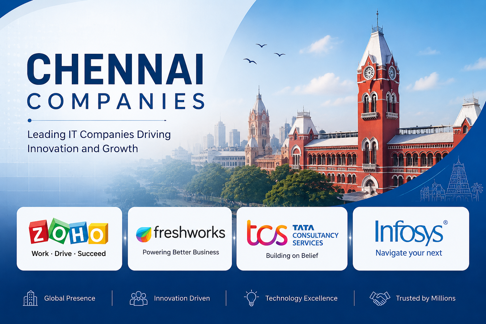
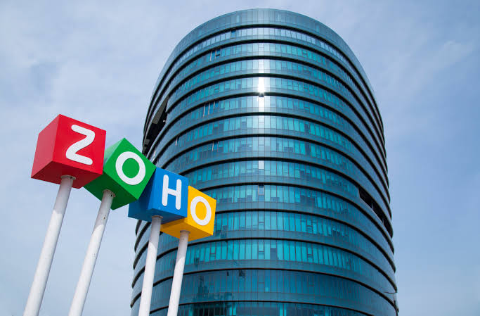
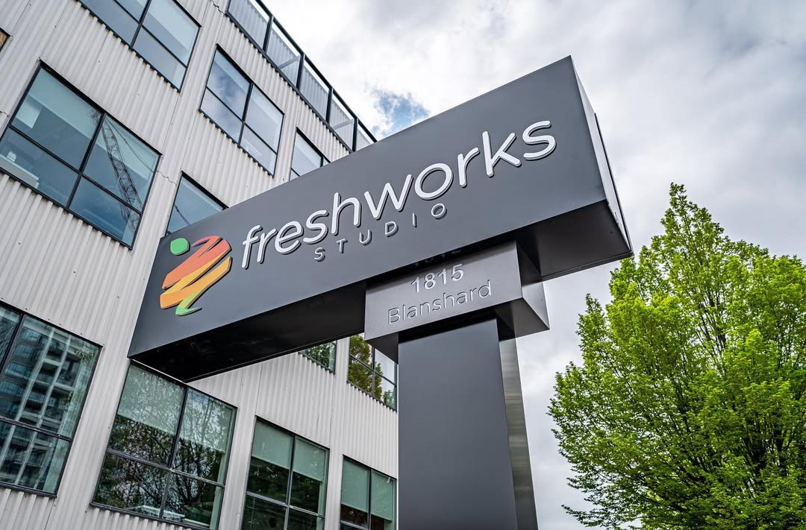
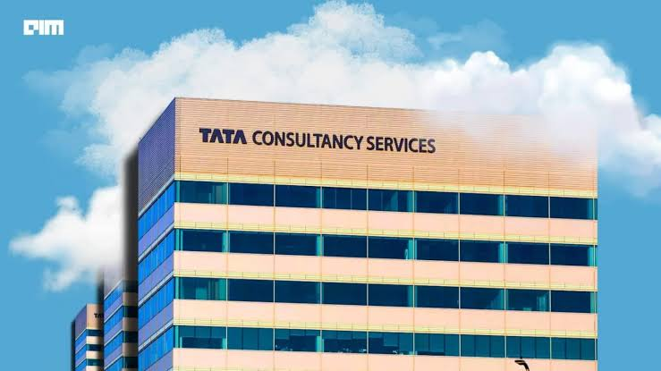
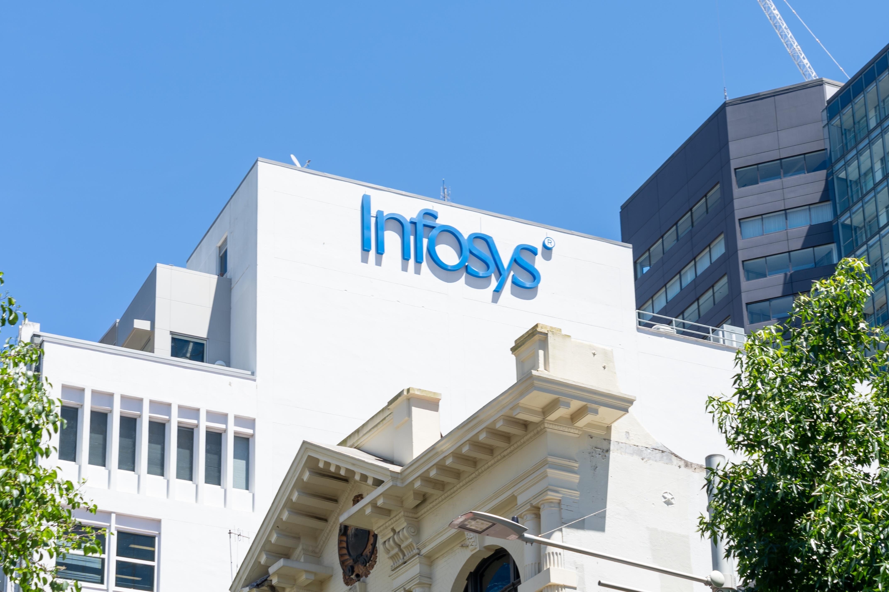

Explore India's IT Companies
PRODUCT AND SOFTWARE BASED COMPANIESCHENNAI COMPANIES
ABOUT
Chennai is one of India's major IT hubs and is home to many leading software and technology companies. It is known for its skilled workforce, excellent infrastructure, and growing IT industry. Top companies such as Zoho, Freshworks, TCS, and Infosys have offices in Chennai and provide services like software development, cloud computing, artificial intelligence, and IT consulting. These companies create thousands of job opportunities and contribute to India's digital growth.
COMPANIES
ZOHO

Zoho is one of India's most successful software companies, founded in Chennai in 1996. It develops cloud-based business applications that help organizations manage customer relationships, finance, human resources, email, and project management. Zoho's products are used by millions of businesses across more than 150 countries. The company is known for its innovation, customer-focused solutions, and commitment to providing high-quality software.
FRESHWORKS

Freshworks is a leading software company headquartered in Chennai. Founded in 2010, it offers cloud-based solutions for customer support, sales, marketing, and IT service management. Its products are designed to help businesses improve customer experiences and increase productivity. Freshworks serves thousands of companies worldwide and has become one of India's fastest-growing technology companies.
TATA CONSULTANCY SERVICES(TCS)

Tata Consultancy Services (TCS) is one of the largest IT services and consulting companies in the world. It provides software development, cloud computing, cybersecurity, artificial intelligence, data analytics, and digital transformation services. TCS works with businesses in banking, healthcare, education, retail, and many other industries. The company is well known for its innovation, global presence, and excellent career opportunities.
INFOSYS

Infosys is a global leader in information technology and consulting services. It helps businesses adopt modern technologies such as cloud computing, artificial intelligence, automation, and digital transformation. Infosys serves clients in more than 50 countries and is recognized for its high-quality services, innovation, and commitment to sustainable business practices. The company has a major development center in Chennai and employs thousands of IT professionals.